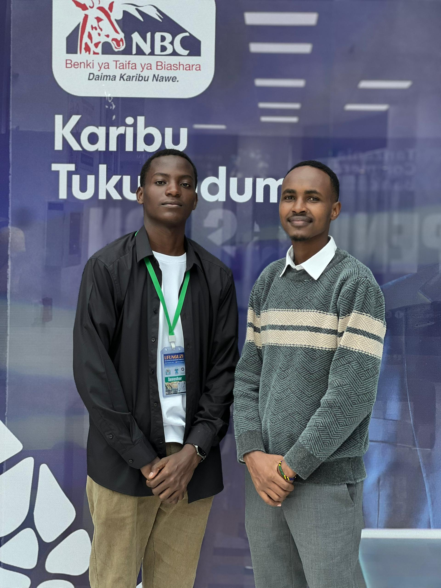
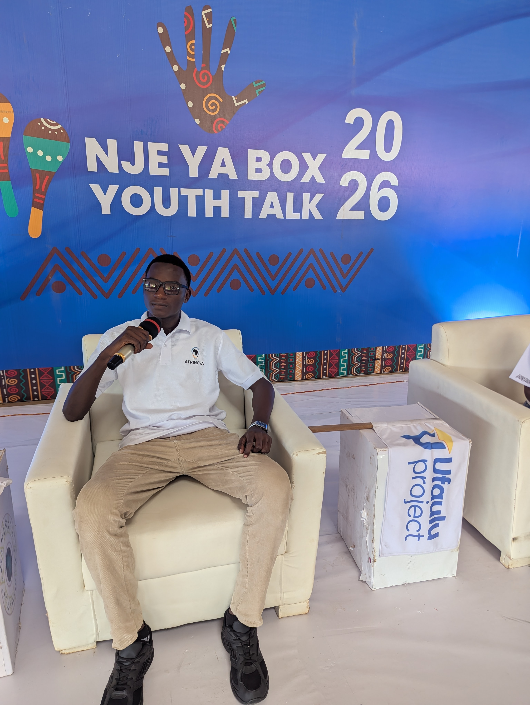
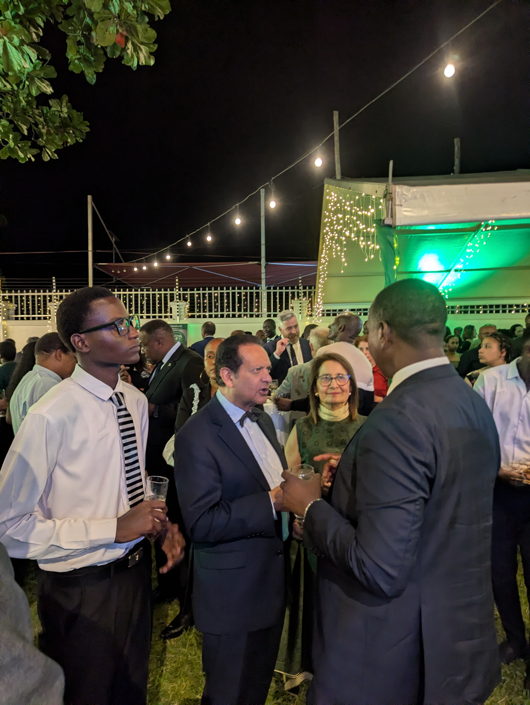

Ammar Benny
About Me
My name is Ammar Benny, a dedicated student at the College of Information and Communication Technologies (CoICT), University of Dar es Salam, where I specialize in Business Information Technology. I am deeply passionate about the intersection of technology and business, with a strong focus on innovation, digital transformation, and building solutions that create meaningful impact.
I am driven by a clear vision to leverage technology as a tool for solving real-world challenges, particularly those affecting youth and emerging communities. My academic journey has equipped me with a unique blend of technical knowledge and business understanding, enabling me to think not only as a developer, but also as a problem solver and strategic innovator.
Beyond the classroom, I actively invest my time in developing practical skills in software development and digital entrepreneurship. I enjoy transforming ideas into tangible projects, collaborating with like-minded individuals, and continuously learning through experimentation and real-world exposure. I believe in building scalable digital platforms that are not only efficient, but also inclusive and impactful.
With a forward-thinking mindset and a strong commitment to growth, my long-term goal is to become a leading tech innovator, creating solutions that bridge gaps between technology and society while empowering the next generation.
Skills
- Programming Skills
- HTML
- Python
- C Programming
- Digital Skills
- Data analysis
- Graphics designing
- Soft Skills
- Communication
- Problem Solving
Education Background
| Level | Institution | Year |
|---|---|---|
| Primary Education | Bismack primary school | 2012 - 2018 |
| Secondary Education | Taqwa Secondary School | 2019 - 2022 |
| High school education | Ihungo Boys high school | 2023 - 2025 |
| Higher Education | University of Dar es Salaam | 2025 - Present |
Hobbies & Interests
- Reading Novels and Books: I have a strong passion for reading novels and various types of books, especially those related to personal development, innovation, and real-life stories. Reading helps me expand my knowledge, improve my thinking capacity, and gain new perspectives about the world. It also strengthens my creativity and communication skills.
- Technology Exploration: I enjoy exploring new technologies, digital tools, and innovative ideas that shape the modern world. This includes learning about emerging trends in software development, startups, and digital platforms that solve real-life problems.
- Entrepreneurship and Innovation: I am deeply interested in building ideas and transforming them into real-world solutions. I enjoy thinking creatively, identifying opportunities, and working on projects that have the potential to create impact, especially for youth and communities.
- Swimming: Swimming is one of my favorite physical activities. It helps me maintain a healthy lifestyle, relax my mind, and build discipline. I enjoy the balance it brings between mental focus and physical fitness.
- Following Sports (Football & Basketball): I enjoy watching and analyzing sports, particularly football and basketball. I follow different teams, players, and competitions, which helps me stay entertained while also learning about teamwork, strategy, and performance under pressure.
- Networking and Social Interaction: I enjoy meeting new people, sharing ideas, and building meaningful connections. Engaging in conversations and exchanging knowledge helps me grow both personally and professionally.
- Traveling and Exploration: I have a strong interest in exploring new places, cultures, and environments. Traveling allows me to experience different perspectives, learn from diverse communities, and gain inspiration for future ideas.
My Activities
Below are some moments captured from my personal and professional activities, reflecting my interests, experiences, and lifestyle. This collection of moments reflects my journey, my growth, and the experiences that continue to shape who I am today.



Connect With Me
I warmly welcome you to connect with me through the platforms below. I am always open to building meaningful relationships, exchanging ideas, and exploring opportunities for collaboration that create value and impact. Let’s connect, share insights, and grow together.